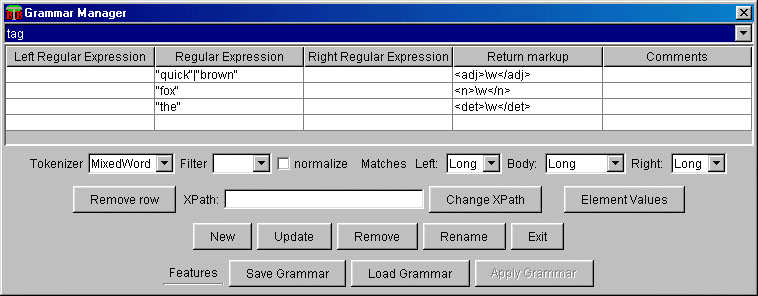

This file contains a short description of the DTD used for saving/loading Grammars in ClarkSystem. There is one example XML document which represents the serialization of one Grammar from the system.
<!DOCTYPE Grammars [
<!ELEMENT Grammars (grammar)+>
<!ELEMENT grammar (name,author?,Comment?,xpath?,tokenizer?,filter?,line+)>
<!ATTLIST grammar
normalize (yes|no) "no"
match_body (long|short|any_up|any_down) "long"
match_left (long|short) "long"
match_right (long|short) "long"
>
The attributes of the grammar represent the matches of the grammar and normalize option
<!ELEMENT name #PCDATA>
<!ELEMENT author #PCDATA>
<!ELEMENT tokenizer #PCDATA>
<!ELEMENT filter #PCDATA>
<!ELEMENT xpath #PCDATA>
<!ELEMENT line (LC?,RE,RC?,RM,Comment?)+>
<!ELEMENT LC #PCDATA>
<!ELEMENT RE #PCDATA>
<!ELEMENT RC #PCDATA>
<!ELEMENT RM #PCDATA>
]>
Example :
<?xml version="1.0"?>
<!-- This Document is created with the Clark System! http://www.bultreebank.org -->
<Grammars>
<grammar normalize="no" match_left="long"
match_body="long" match_right="long">
<name>tag</name>
<author>Clark System</author>
<tokenizer>MixedWord</tokenizer>
<ElValues></ElValues>
<line>
<LC></LC>
<RE>"quick"|"brown"</RE>
<RC></RC>
<RM><adj>\w</adj></RM>
<Comment></Comment>
</line>
<line>
<LC></LC>
<RE>"fox"</RE>
<RC></RC>
<RM><n>\w</n></RM>
<Comment></Comment>
</line>
<line>
<LC></LC>
<RE>"the"</RE>
<RC></RC>
<RM><det>\w</det></RM>
<Comment></Comment>
</line>
</grammar>
</Grammars>
